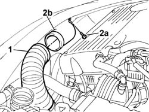
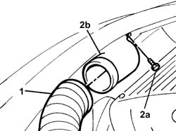

Procedures › 10 ENGINE › 1048 ENGINE AIR SUPPLY CIRCUIT › 1048A VACUUM AIR CIRCUIT › 1048A23 Cold AIR INTAKE for air filter - R.R. 1048A23 Cold AIR INTAKE for air filter - R.R.
Path Procedures > 10 ENGINE > 1048 ENGINE AIR SUPPLY CIRCUIT > 1048A VACUUM AIR CIRCUIT > 1048A23 Cold AIR INTAKE for air filter - R.R.
Kind repair procedure (removal / refitting; the operation number is the code)
Applies to engines: 2.0 TB, 2.4 20V, 3.0 V6, 3.2 V6; all production periods
Interactive page https://sloeber94.github.io/elrnDB-lThss/en/#/74990
Applies to: engines: 2.4 20V; all production periods
1. Disconnect the air inlet hose from the cold air intake.
2. Undo the bolt (2a) and remove the cold air intake (2b).

Applies to: engines: 2.4 20V; all production periods
- Position the cold air intake and secure it to the front crossmember using the fixing bolt.
- Connect the air inlet hose to the cold air intake.
Applies to: engines: 2.0 TB; all production periods
1. Disconnect the pipe connected to the air filter casing.
2. Undo the fixing bolt (2a) and remove the cold air intake (2b) for the air filter fastened to the crossmember.

Applies to: engines: 2.0 TB; all production periods
- Fit the cold air intake for the air filter.
- Tighten the bolt fixing the cold intake to the crossmember.
- Connect the pipe connected to the air filter casing.
Topics linked from this page (2)
Topics that link to this page (44) 1004B10 POWER UNIT with manual gearbox - R.R. repair procedure (removal / refitting; the operation number is the code) · engines: 2.0 TB, 2.4 20V, 3.0 V6, 3.2 V6; all production periods 1004B17 POWER UNIT with automatic transmission, complete with support frame, front suspension- R.R. for versions with air conditioning repair procedure (removal / refitting; the operation number is the code) · engines: 2.4 20V, 3.0 V6, 3.2 V6; all production periods 1008A43 Power unit RIGID MOUNT - AUTOMATIC GEARBOX side - R&R repair procedure (removal / refitting; the operation number is the code) · engines: 2.4 20V, 3.0 V6, 3.2 V6; all production periods 1016C10 SINGLE CYLINDER HEAD - R.R. and Replace gasket repair procedure (removal / refitting; the operation number is the code) · engines: 2.0 TB, 2.4 20V; all production periods 1016D20 LEFT CYLINDER HEAD - R.R. and replace gasket repair procedure (removal / refitting; the operation number is the code) · engines: 2.0 TB, 2.4 20V, 3.0 V6, 3.2 V6; all production periods 1020D18 Front crankshaft COVER OIL SEAL - Replace repair procedure (removal / refitting; the operation number is the code) · engines: 2.0 TB, 2.4 20V, 3.0 V6, 3.2 V6; all production periods 1020D26 Flywheel side oil seal COVER - R.R. and Replace seals repair procedure (removal / refitting; the operation number is the code) · engines: 2.4 20V; all production periods 1024B20 ENGINE FLYWHEEL - R&R for versions with automatic transmission repair procedure (removal / refitting; the operation number is the code) · engines: 2.0 TB, 2.4 20V, 3.0 V6, 3.2 V6; all production periods 1032B10 TOOTHED timing BELT - R.R. for timing adjustment or replacement repair procedure (removal / refitting; the operation number is the code) · engines: 2.0 TB, 2.4 20V, 3.0 V6, 3.2 V6; all production periods 1032B46 TOOTHED DRIVE PULLEY/S - R.R. repair procedure (removal / refitting; the operation number is the code) · engines: 2.0 TB, 2.4 20V; all production periods 1032B52 TOOTHED DRIVEN PULLEY (one) - R.R. repair procedure (removal / refitting; the operation number is the code) · engines: 2.0 TB, 2.4 20V; all production periods 1032C18 Timing belt MOVING TENSIONER - R.R. repair procedure (removal / refitting; the operation number is the code) · engines: 2.0 TB, 2.4 20V, 3.0 V6, 3.2 V6; all production periods 1032C32 TIMING BELT FIXED TENSIONER - R.R. repair procedure (removal / refitting; the operation number is the code) · engines: 2.0 TB, 2.4 20V, 3.0 V6, 3.2 V6; all production periods 1036C10 CAMSHAFTS in cylinder head - R.R. repair procedure (removal / refitting; the operation number is the code) · engines: 2.0 TB, 2.4 20V; all production periods 1036C39 timing variator on cylinder head intake camshaft - r r repair procedure (removal / refitting; the operation number is the code) · engines: 2.0 TB, 2.4 20V; all production periods 1036H58 HYDRAULIC TAPPETS (all) - R.R. - Includes R.R. camshaft repair procedure (removal / refitting; the operation number is the code) · engines: 2.0 TB, 2.4 20V; all production periods 1056B51 CAM ANGLE SENSOR - R.R. repair procedure (removal / refitting; the operation number is the code) · engines: 2.0 TB, 2.4 20V, 3.0 V6, 3.2 V6; all production periods 1072C10 EXHAUST MANIFOLD - R.R. and Replace seal repair procedure (removal / refitting; the operation number is the code) · engines: 2.0 TB, 2.4 20V; all production periods 1072C13 EXHAUST MANIFOLD GASKET - REPLACEMENT repair procedure (removal / refitting; the operation number is the code) · engines: 2.4 20V; all production periods 1072C44 Exhaust manifold heat shield on BULKHEAD - R.R. repair procedure (removal / refitting; the operation number is the code) · engines: 2.0 TB, 2.4 20V; all production periods 1076B10 Exhaust PIPE assembly - R.R. repair procedure (removal / refitting; the operation number is the code) · engines: 2.0 TB, 2.4 20V; all production periods 1080B38 LEFT CATALYTIC PRECONVERTER - R.R. or Replace Gasket repair procedure (removal / refitting; the operation number is the code) · engines: 2.0 TB, 2.4 20V, 3.0 V6, 3.2 V6; all production periods 1080B62 CATALYTIC CONVERTER - R.R. repair procedure (removal / refitting; the operation number is the code) · engines: 2.0 TB, 2.4 20V, 3.0 V6, 3.2 V6; all production periods 1088B20 Engine cooling RADIATOR - R.R. repair procedure (removal / refitting; the operation number is the code) · engines: 2.0 TB, 2.4 20V, 3.0 V6, 3.2 V6; all production periods 1088C10 WATER PUMP - R.R. repair procedure (removal / refitting; the operation number is the code) · engines: 2.0 TB, 2.4 20V, 3.0 V6, 3.2 V6; all production periods 1088D22 WATER PUMP INLET CONNECTOR - R.R. repair procedure (removal / refitting; the operation number is the code) · engines: 2.0 TB, 2.4 20V; all production periods 1088D24 RIGID PIPE for coolant inlet to water pump - R&R repair procedure (removal / refitting; the operation number is the code) · engines: 2.0 TB, 2.4 20V, 3.0 V6, 3.2 V6; all production periods 1088E10 Radiator cooling FAN - R.R. repair procedure (removal / refitting; the operation number is the code) · engines: 2.0 TB, 2.4 20V, 3.0 V6, 3.2 V6; all production periods 1088E42 ENGINE COOLANT TEMPERATURE MULTIFUNCTION CONTROL UNIT - R.R. repair procedure (removal / refitting; the operation number is the code) · engines: 2.0 TB, 2.4 20V, 3.0 V6, 3.2 V6; all production periods 2130A10 AUTOMATIC TRANSMISSION - R.R. repair procedure (removal / refitting; the operation number is the code) · engines: 2.4 20V, 3.0 V6, 3.2 V6; all production periods 2130A38 Automatic transmission HEAT EXCHANGER - R.R. repair procedure (removal / refitting; the operation number is the code) · engines: 2.4 20V, 3.0 V6, 3.2 V6; all production periods 2130A70 Rubber hose with built in flexible pipe for directing coolant to automatic transmission oil heat exchanger repair procedure (removal / refitting; the operation number is the code) · engines: 2.0 TB, 2.4 20V, 3.0 V6, 3.2 V6; all production periods 2130A74 Flexible water return pipe to crankcase between rigid pipe and automatic transmission fluid heat exchanger repair procedure (removal / refitting; the operation number is the code) · engines: 2.4 20V, 3.0 V6, 3.2 V6; all production periods 2130B12 Automatic transmission TORQUE CONVERTER - R.R. repair procedure (removal / refitting; the operation number is the code) · engines: 2.4 20V, 3.0 V6, 3.2 V6; all production periods 2130B36 Automatic transmission SOLENOID VALVE COVER - R.R. repair procedure (removal / refitting; the operation number is the code) · engines: 2.4 20V; all production periods 2130B40 Gear selector SOLENOID VALVE UNIT - R.R. repair procedure (removal / refitting; the operation number is the code) · engines: 2.4 20V, 3.0 V6, 3.2 V6; all production periods 2130B48 GEAR SELECTOR on automatic transmission - R.R. repair procedure (removal / refitting; the operation number is the code) · engines: 2.4 20V, 3.0 V6, 3.2 V6; all production periods 2135B58 ELECTRONIC AUTOMATIC TRANSMISSION system WIRING - R.R. repair procedure (removal / refitting; the operation number is the code) · engines: 2.4 20V, 3.0 V6, 3.2 V6; all production periods 4130B20 POWER ASSISTED STEERING PUMP - R.R. repair procedure (removal / refitting; the operation number is the code) · all engines; all production periods 4130B21 POWER ASSISTED STEERING PUMP - R.R. with interfering belt(s) removed - Includes bleeding air repair procedure (removal / refitting; the operation number is the code) · all engines; all production periods 4130B94 DUPLEX PIPES from cooling coil or heat exchanger radiator - R.R. repair procedure (removal / refitting; the operation number is the code) · all engines; all production periods 4130C14 Converter VALVE ON power steering box - R.R. repair procedure (removal / refitting; the operation number is the code) · all engines; all production periods 4410D10 Front suspension FRAME - R.R. repair procedure (removal / refitting; the operation number is the code) · all engines; all production periods 5040A20 Air conditioning COMPRESSOR - R.R. - Includes fluid level check and top up if necessary repair procedure (removal / refitting; the operation number is the code) · all engines; all production periods
 Removing
Removing Refitting
Refitting